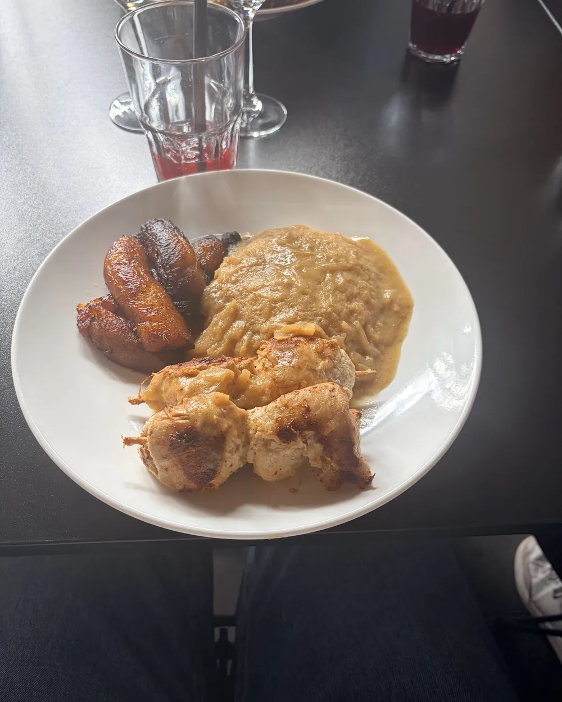
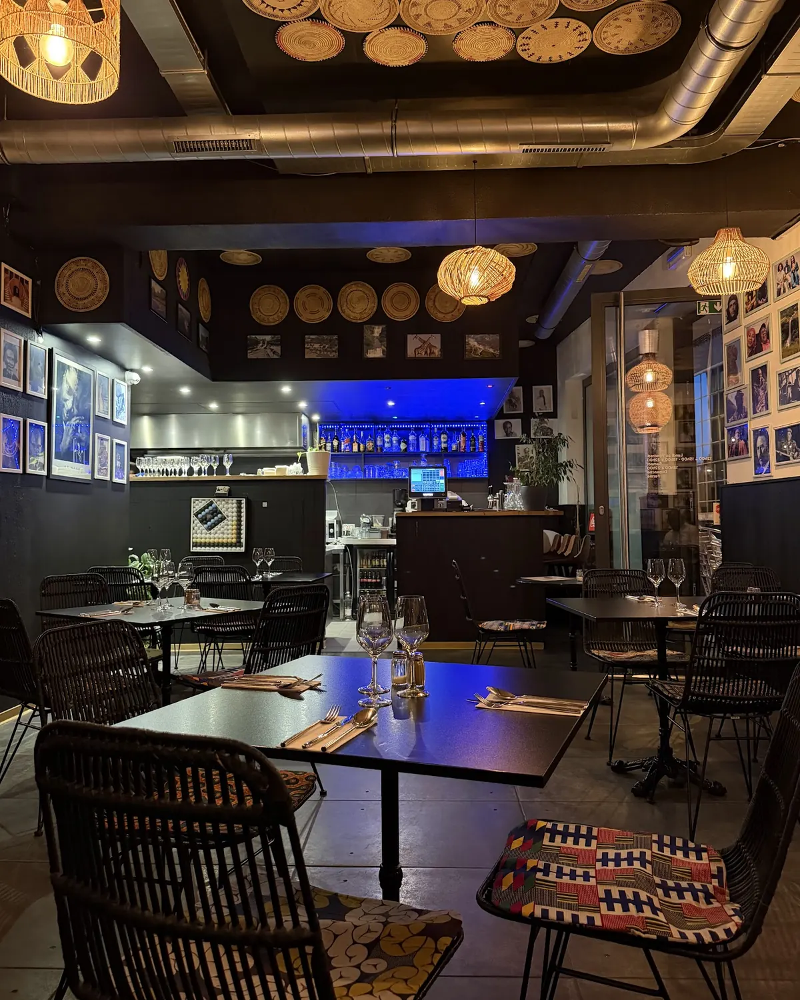
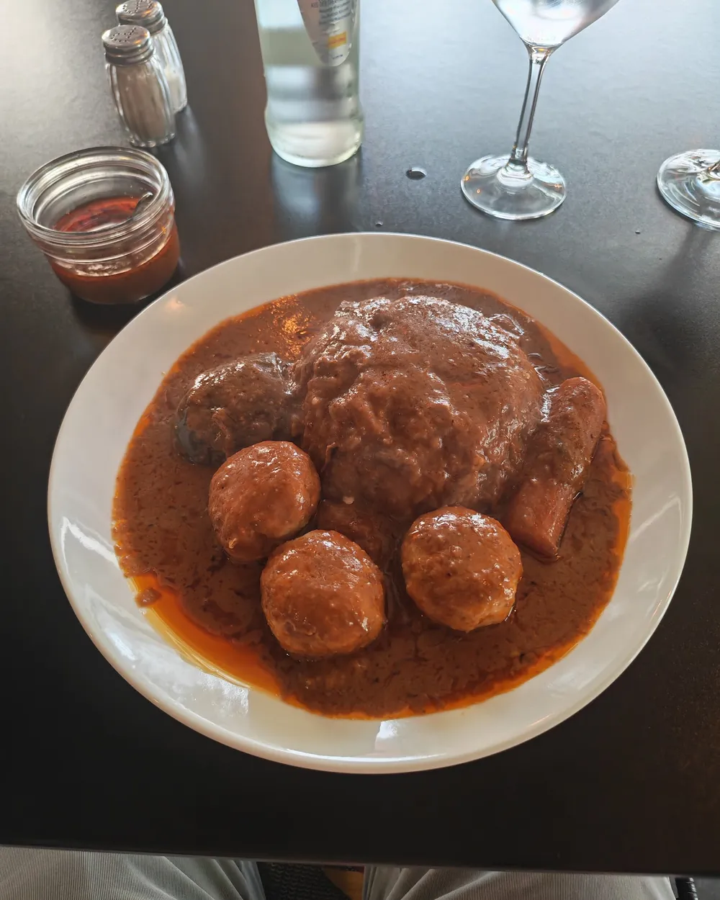
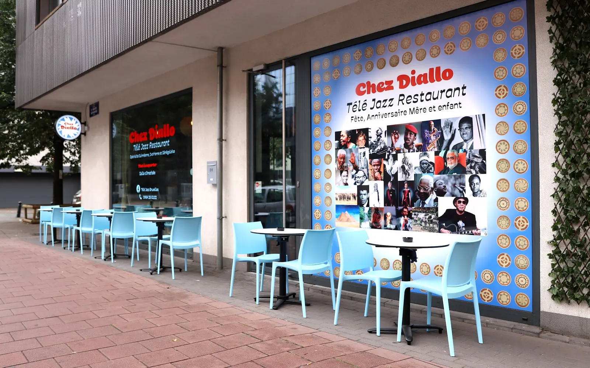
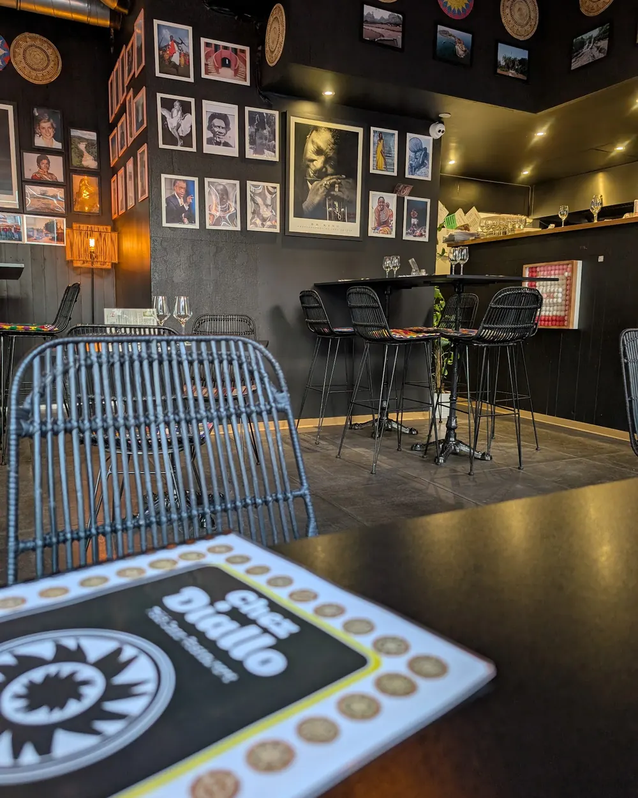
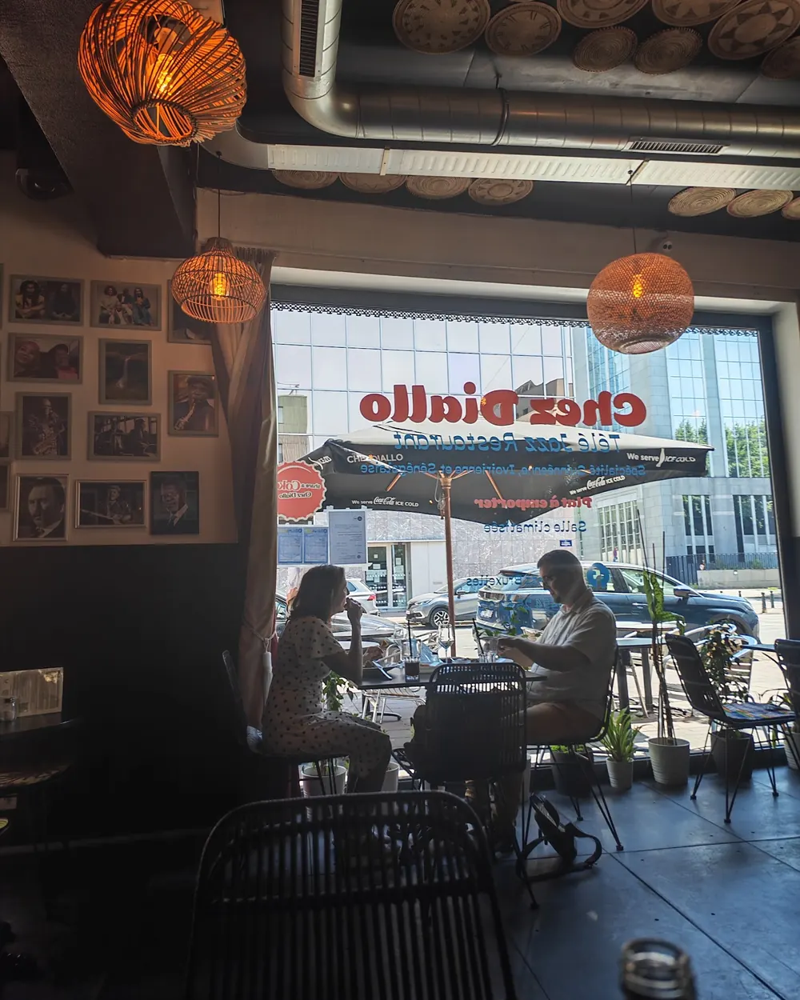
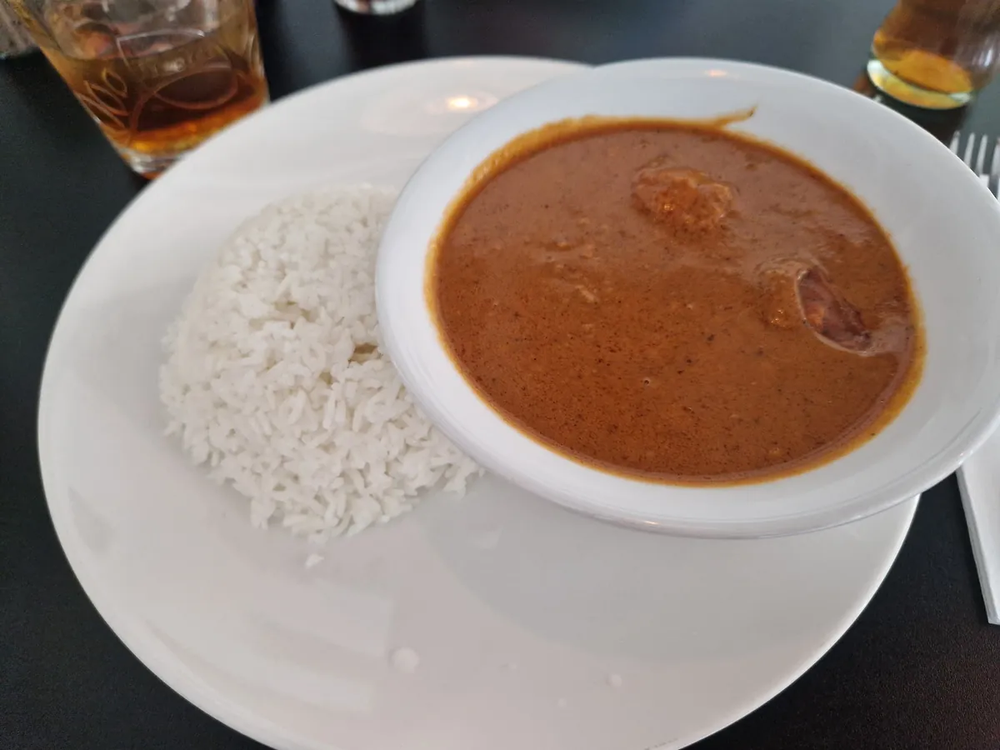
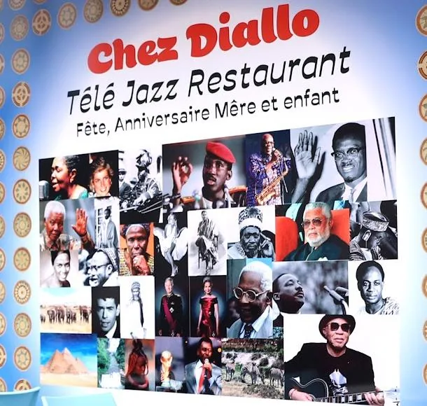
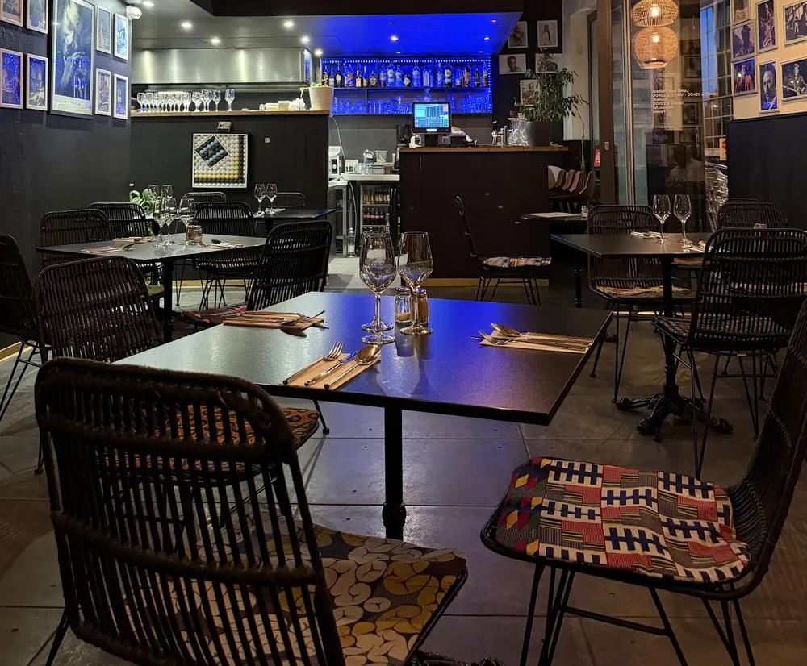
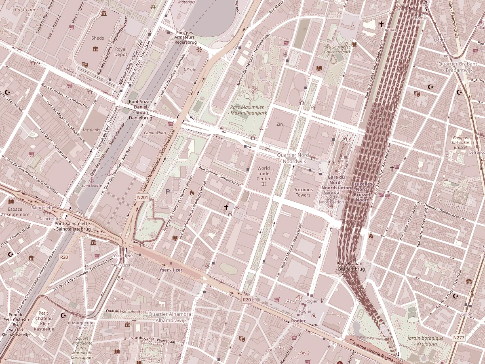

Poulet, oignons et alocos
Le poulet Yassa est délicieux et le bissap aussi.
Axelle B., sur Google
Restaurant africain · Bruxelles
Poulet yassa, maffé, attiéké, alocos et bissap : Barry cuisine l'Afrique de l'Ouest comme à la maison, Abdoulaye vous reçoit en salle, entre les assiettes d'osier et les légendes au mur.


La maison
Depuis 2022, Abdoulaye Diallo accueille et installe chaque table. En cuisine, son épouse Barry prépare une cuisine ouest-africaine familiale, authentique et sans chichis.
Les clients parlent de portions copieuses, de prix corrects et d'un service rapide. Les plats partent aussi à emporter.
Simple, direct, et terriblement bon.Le Fooding, décembre 2025

La terrasse, chaussée d'Anvers
Le comptoir
Côté vitrineLa table
Une cuisine venue du Sénégal, du Mali, de Guinée et de Côte d'Ivoire, comme l'écrit un client. Voici les plats que les clients et la critique citent le plus souvent.

Le poulet Yassa est délicieux et le bissap aussi.
Axelle B., sur Google
Le Fooding y a compté trois giga-boulettes de poulet
en sauce arachide, sur un lit de riz.

Le poulet yassa et le maffé étaient succulents, les bananes plantains gourmandes et le bissap au top!
Géraldine, sur Google
Plats de 12 à 19 €, accompagnements de 3 à 6 €, desserts de 7 à 8 €Plats et prix relevés par Le Fooding en décembre 2025 et dans les avis Google
Le décor
Musique pas trop forte et belles décorations qui rappellent les origines noires et africaines avec des éléments des légendes noires inspirantes partout dans le restaurant.Axelle B., avis Google

L'affiche de la vitrine
Fêtes et familles
Sur la vitrine, c'est écrit en grand : fête, anniversaire, mère et enfant. On y vient en famille, et la carte prévoit des portions pour les plus jeunes.
« J’y suis allée avec des ados et la grand mère et les 3 générations ont adorés! On y retournera sans aucun doute. »Fatima C., avis GoogleOrganiser une fête
Réserver
Le jour, le service, le nombre de couverts : trente secondes, de jour comme de nuit, sans attendre que quelqu'un décroche pendant le coup de feu.
Avis
Ce que les clients écrivent sur Google après leur repas chaussée d'Anvers.
Horaires et accès
| lundi | 12 h – 15 h · 18 h – 22 h |
|---|---|
| mardi | 12 h – 15 h · 18 h – 22 h |
| mercredi | 12 h – 15 h · 18 h – 22 h |
| jeudi | 12 h – 15 h · 18 h – 22 h |
| vendredi | 12 h – 15 h · 18 h – 22 h |
| samedi | 18 h – 22 h |
| dimanche | fermé |

Itinéraire © OpenStreetMapLes plats se prennent aussi à emporter. Un coup de fil au 0494 25 52 02 pour commander.
Arrêt WTC. Et devant la vitrine, une terrasse aux chaises bleues.